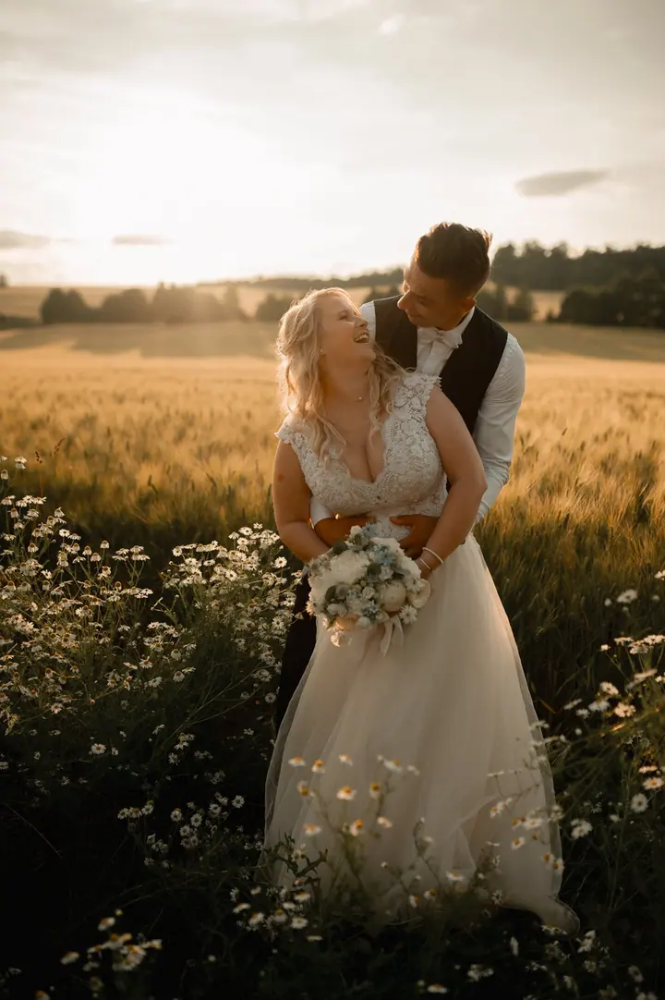

Svatby
Fotím reportážně celý svatební den, včetně chvil, které v tom shonu sami nestihnete vidět. Novomanželským focením vás provedu za chvilku, abyste den trávili hlavně se svými blízkými.

Jmenuji se Hana Řezníčková a pod značkou Láska v hledáčku fotím svatby i rodiny v Hranicích a okolí. Zajímá mě nervozita při přípravách, slzy dojetí u obřadu i vaše zami…
Rezervovat termínFotím už osm let a za tu dobu jsem se stala „tou tetou s foťákem“, ke které se rodiny vracejí znovu a znovu. Ne kvůli pózám, ale kvůli pocitu. Od dětství ráda prohlížím staré fotografie, a tak při každém zmáčknutí spouště myslím na to, že právě tahle fotka jednou potěší vás, vaše děti a možná i jejich děti.


Na svatbě jsem víc než fotografka. Zapnu šaty, poradím, na kterou nohu patří podvazek (na pravou), podám kapesník a když je potřeba, nasměruju i hosty. Svou energii a čas každý rok věnuji jen deseti párům, abych na každou svatbu přijela odpočatá a soustředěná jen na váš den.
Ráda vás provedu jakýmkoliv focením citlivě, s respektem a bez tlaku. Fotím venku, u vás doma nebo ve svém ateliéru v Hranicích a nejvíc mě těší, když se z neznámých tváří na první schůzce postupně stanou známí a někdy i přátelé.
Co fotím
Fotím reportážně celý svatební den, včetně chvil, které v tom shonu sami nestihnete vidět. Novomanželským focením vás provedu za chvilku, abyste den trávili hlavně se svými blízkými.
Fotím venku nebo u vás doma. S dětmi vedu focení hrou a přizpůsobím se jejich tempu, cena začíná na 4 000 Kč a fotky máte do 30 dnů.
V ateliéru v Hranicích fotím rodiny, miminka i průkazové fotografie. Každý rok tu pořádám vánoční focení, letos už jeho 8. ročník.
Fotím reprezentativní fotografie pro vaše podnikání, oslavy narozenin i focení podle vašeho přání.
Postup
Napište mi, o jaké focení máte zájem a kdy. Ozvu se vám s volnými termíny a dalšími informacemi.
Před svatbou se rádi sejdeme a probereme vše osobně. Spolupráci podložíme smlouvou, abyste měli jistotu, a u rodinného focení vám poradím, co si vzít na sebe.
Na svatbě dávám přednost momentkám a novomanželské focení zvládneme během chvilky. S dětmi focení vedu hrou a nikam nespěchám.
Fotky z venkovního a rodinného focení dostanete do 30 dnů. U svatby se termín řídí zvoleným balíčkem.
Otázky
Vůbec ne. Většina lidí, kteří za mnou přijdou, stojí před profesionálním fotografem poprvé. Celým focením vás provedu a pomůžu s postavením, pohybem i drobnými detaily. Pózovat umět nemusíte.
Neposednost je u dětí úplně normální a často z ní vznikají ty nejkrásnější fotky. Děti do ničeho netlačím, vedu je hrou a nechám je být samy sebou. Místo sezení v řadě čekejte přirozené momentky plné smíchu a pohybu.
Rodinné a těhotenské focení trvá obvykle 45 až 60 minut, miminkovské 60 až 90 minut podle nálady miminka. Svatbu fotím podle zvoleného balíčku nebo individuální domluvy.
Venku, u vás doma nebo ve svém ateliéru na Třídě 1. máje v Hranicích. Jezdím ze Skaličky u Hranic a svatby fotím v okolí Přerova, Hranic a Olomouce i po celé ČR.